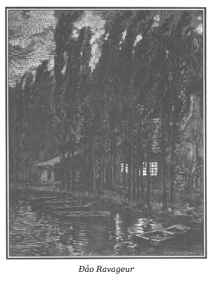
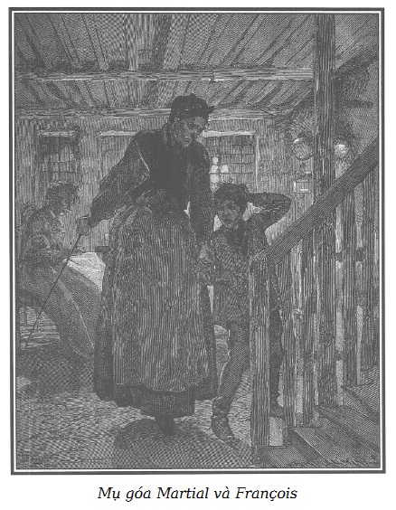

Những cảnh sau đây diễn ra trong đêm mụ Séraphin theo lệnh lão chưởng khế Jacques Ferrand đến tìm gia đình Martial, bọn ăn cướp trên sông, cư trú ở đầu mũi một cái cồn nhỏ trên sông Seine, không xa cầu Asnières.
Ông Martial chết trên máy chém như cha của ông, để lại một vợ góa, bốn con trai và hai cô con gái.

.Đứa con trai thứ hai đã bị án khổ sai chung thân. Cái gia đình đông con ấy nay còn lại trên đảo Ravageur*. Mụ Martial; ba người con trai: người anh cả là người tình của Sói Cái, hai mươi lăm tuổi, một người hai mươi tuổi, một đứa mười hai tuổi; hai cô con gái, một cô mười tám tuổi, đứa còn lại chín tuổi. Một điển hình của những gia đình có một thứ di truyền đáng sợ về tội ác, rất thường gặp.
Tên gọi mà người dân trong vùng đặt cho ổ cướp ấy. “Ravageur” trong tiếng Pháp có nghĩa là “kẻ tàn phá”.
Điều đó không thể khác.
Chúng tôi không ngừng nhắc lại: xã hội chỉ nghĩ đến trừng phạt, không bao giờ nghĩ đến phòng ngừa tội ác.
Một tên trộm sẽ bị tù chung thân…
Một tên nữa sẽ bị chém đầu…
Họ để lại những đứa con…
Xã hội có chăm sóc những đứa trẻ mồ côi ấy không? Những đứa trẻ mồ côi do xã hội tước vĩnh viễn công quyền hoặc xử tử bố của chúng?
Xã hội có thay thế việc phế truất người mà luật pháp đã tuyên bố là xấu xa, không xứng đáng, người mà luật pháp đã trừ khử bằng một sự bảo vệ tốt lành không?
Không, khi con vật chết, nọc nó cũng không còn, xã hội nói như thế.
Xã hội đã lầm.
Nọc độc của sự sa đọa rất tinh vi, nó xâm nhập, lây lan đến nỗi trở thành di truyền. Nhưng nếu chống lại nó kịp thời, thì không phải không chữa được.
Mâu thuẫn kỳ quặc!
Mổ tử thi thấy một người chết vì bệnh di truyền chăng? Nhờ những cố gắng phòng ngừa, người ta ngăn được, không để con cháu người đó bị căn bệnh ấy…
Mong sao những việc làm như thế được tái diễn trong lĩnh vực đạo đức.
Phải chứng minh rằng một tội phạm hầu như bao giờ cũng để lại cho con mình mầm mống của sự đồi trụy…
Để cứu cái tâm hồn non trẻ ấy, người ta có làm như ông thầy thuốc làm với cơ thể để chống lại một căn bệnh di truyền?
Không…
Đáng lẽ phải chữa bệnh cho con người khốn khổ đó, người ta để nó tự hủy hoại đến chết.
Và cũng như quần chúng tin rằng con một người đao phủ sẽ thành đao phủ. Người ta tin rằng con một tên tội phạm nhất định sẽ trở thành tội phạm…
Và người ta coi hiện tượng đó như một sự di truyền khốc liệt, một sự hư hỏng do sự thờ ơ, ích kỷ của xã hội gây ra.
Đến nỗi, mặc dù có những bài học tai hại ấy, đứa bé mà luật pháp biến thành mồ côi ngẫu nhiên, nhưng nó vẫn siêng năng, thật thà, một thành kiến dã man vẫn đổ lên đầu nó vết nhơ nhục nhã của cha nó. Đi đâu nó cũng vấp phải sự ghét bỏ oan uổng, khó lòng tìm được công việc…
Và đáng lẽ nên giúp đỡ nó, cứu nó khỏi sự chán nản, thất vọng, nhất là những nỗi hận về sự bất công đôi khi đẩy những người tốt nhất đến sự chống trả, tội lỗi thì xã hội lại nói: “Rồi nó sẽ trở chứng cho mà xem. Chẳng phải đó là những tên cai tù, gác ngục, đao phủ sao?”
Thành thử đối với người vẫn giữ được trong sạch giữa bùn nhơ thì không một chỗ dựa, không một lời khuyến khích!
Thành thử với người sinh ra trong một gia đình đồi bại, hư hỏng từ khi còn rất trẻ, thì không có hy vọng trở thành người lương thiện.
Xã hội trả lời: “Có, có, tôi sẽ chữa lành cho nó, đứa bé mà tôi đã làm thành mồ côi, nhưng phải có lúc, có nơi theo cách của tôi và sau này.
Muốn tẩy một mụn cóc, chích một cái nhọt phải đợi nó chín.”
Một tên tội phạm cũng cần phải đợi…
“Nhà tù và thuyền ga-le*, đó là các bệnh viện của tôi. Trường hợp không chữa được, đã có máy chém.
Thuyền do các tù nhân khổ sai chèo.
Còn cách điều trị đứa trẻ mồ côi ấy, tôi sẽ nghĩ đến, nói anh biết thế, nhưng đừng sốt ruột, để cho cái mầm hư hỏng di truyền đang ấp ủ lớn lên, mở rộng thêm, sâu thêm sự phá hoại.
Đừng sốt ruột, nào, đừng sốt ruột. Lúc nào con người ấy thối nát tận tâm can, rỉ tội ác ra từng lỗ chân lông, lúc nào một vụ cướp hoặc vụ giết người đặt nó vào ghế tội phạm trước kia cha nó ngồi, ồ, lúc đó chúng ta sẽ chữa cho kẻ mắc bệnh tội ác di truyền như chúng ta đã chữa cho người truyền bệnh.
Vào nhà tù hoặc lên máy chém, đứa con sẽ thấy nơi cha nó ngồi còn ấm chỗ…”
Vâng, xã hội lý luận như vậy.
Rồi xã hội ngạc nhiên, nổi giận và kinh hoàng thấy những thứ di truyền về trộm cướp, giết người cứ dai dẳng ác nghiệt đời này sang đời khác.
Bức tranh đen tối: Bọn cướp sông có mục đích vẽ ra cho thấy tội ác di truyền trong một gia đình như thế nào, nếu xã hội không dùng luật pháp hoặc cách nào khác phòng ngừa cho những đứa bé đã bị pháp luật làm cho trở thành mồ côi khỏi những hậu quả khủng khiếp của bản án đánh vào cha chúng.
Trong phần đầu của cuốn sách này, chúng tôi đã phác ra những nét của một trang trại kiểu mẫu do Rodolphe lập ra để khuyến khích giáo dục và tưởng lệ những người thợ cày nghèo nhưng thật thà, chăm chỉ.
Nhân đây, chúng tôi xin nói thêm:
Những người nghèo khổ nhưng lương thiện ít ra cũng đáng được chú ý bằng những kẻ tội phạm. Tuy nhiên đã có nhiều hội đỡ đầu những thanh niên bị giam hoặc được thả ra, nhưng chưa có hội nào được tổ chức với mục đích giúp những thanh niên nghèo khổ có đạo đức mẫu mực. Thành thử cần phải phạm tội mới được hưởng sự giúp đỡ của các tổ chức đáng quý và hữu ích kia.
Và chúng tôi đã để cho một người nông dân trong trại Bouqueval nói:
– Không tuyệt vọng với kẻ ác, đó là nhân đạo và bác ái. Nhưng cũng phải nuôi hy vọng cho người tốt. Giả dụ như có một thanh niên thật thà, mạnh khỏe, chăm chỉ, có nguyện vọng muốn làm điều tốt, đến trình diện ở một cái trang trại toàn những thanh niên từng trộm cắp, người ta lại hỏi anh: “Này cậu, cậu đã từng ăn cắp hay đi lang thang chưa?” – “Chưa!” – “Thế thì không có chỗ cho cậu ở đây!”
Sự khập khiễng ấy đã đập vào trí óc những người còn cao minh hơn chúng tôi. Nhờ có những người như vậy, cái mà chúng tôi coi là không tưởng đã được thực hiện.
Dưới sự chủ tọa của một nhân vật lỗi lạc, rất đáng kính hiện nay, ông Bá tước Portalis, và dưới sự chỉ đạo thông minh của một người thật sự nhân ái, có tấm lòng hào hiệp, có tinh thần thực tiễn và sáng suốt, ông Allier, một hội vừa được thành lập với mục đích cứu giúp những thanh niên nghèo và lương thiện quận Seine, đưa họ vào những tập đoàn nông nghiệp.
Chúng tôi rất tự hào, rất sung sướng được cùng chung ý nghĩ, nguyện vọng và hy vọng với những người sáng lập ra cái hội bảo trợ mới mẻ ấy. Bởi vì chúng tôi là những người truyền bá vô danh nhưng tin tưởng rất mạnh vào hai chân lý lớn này: Xã hội có bổn phận phải ngăn ngừa cái xấu và hết sức khuyến khích, tưởng lệ cái tốt nảy sinh trong lòng nó.
Nhắc đến cái công cuộc từ thiện mới mẻ này, mà tư tưởng đúng đắn và hợp đạo lý, nhất định phải có một tác dụng bổ ích và phong phú, chúng tôi mong rằng các nhà sáng lập sẽ nghĩ đến cách lấp một lỗ trống khác bằng cách mở rộng sự bảo trợ hay ít nhất, quan tâm đến những đứa trẻ mà cha mẹ chúng bị tù tội hay bị vĩnh viễn tước công quyền do phạm tội đại ác, nay chúng trở thành mồi côi do cha mẹ bị thi hành pháp luật.
Những đứa trẻ không may này, có một số đáng chú ý vì có những thiện hướng lành mạnh, chúng nghèo khổ, chúng đáng được quan tâm bởi cảnh ngộ đặc biệt, nhọc nhằn, khó khăn và nguy hiểm.
Vâng, nhọc nhằn, khó khăn, nguy hiểm.
Xin phép được nói một lần nữa, hầu như bao giờ cũng là nạn nhân của sự hắt hủi độc ác, nhiều gia đình có tội phạm, không xin được việc, để thoát khỏi sự bài xích của mọi người, buộc phải rời khỏi nơi mà họ có phương tiện sinh sống.
Chua xót, tức tối vì nỗi bất công, bị sỉ nhục ngang với kẻ tội phạm về những lỗi lầm mà họ hoàn toàn không dính dáng. Đôi khi không còn cách sinh sống tử tế, họ đều phải ngã gục nếu cứ cố sống lương thiện.
Đáng lẽ ra, biết họ phải chịu một mầm mống hư hỏng gần như không tránh khỏi thì ta phải tìm cách cứu vớt họ, khi còn có thể.
Sự có mặt của những trẻ mồ côi do bị thi hành pháp luật cùng với những trẻ em khác được xã hội thu nhặt, sẽ là một bài học có ích cho mọi người. Nó chứng tỏ rằng, nếu ta phải thẳng tay trừng trị kẻ phạm tội thì những người thân của họ không bị thiệt hại gì, lại còn được mọi người quý mến, nếu cố gắng can đảm, có đạo đức, họ sẽ khôi phục được danh dự cho một cái tên bị hoen ố.
Có thể nói được chăng, nhà làm luật còn muốn sự trừng phạt ghê gớm hơn, gián tiếp trị người cha có tội bằng cách đánh vào tương lai của đứa bé vô tội?
Như vậy thì dã man, vô luân và vô nghĩa.
Ngược lại, có phải là rất đạo đức nếu chứng minh được cho công chúng thấy:
“Trong tội phạm không có mối quan hệ di truyền;
Vết nhơ nguồn gốc không phải không xóa được.”
Thật đau lòng khi nghĩ rằng Nhà nước chưa bao giờ đi đầu trong những vấn đề nóng hổi, đụng chạm rất nhiều đến đời sống xã hội.
Có thể khác được không?
Trong phiên họp cuối cùng của quốc hội lập pháp, một đại biểu, xúc động vì cảnh nghèo và những khổ đau của các tầng lớp nghèo, đã đề nghị một trong nhiều phương án giải quyết, thành lập những nhà tế bần cho người lao động.
Đề án ấy, chắc chắn là dở về hình thức nhưng ít nhất cũng chứa một tư tưởng nhân đạo cao đẹp, đáng được xem xét nghiêm chỉnh vì nó liên quan đến vấn đề rộng lớn của tổ chức lao động, đề án ấy nhận được một trận cười hể hả kéo dài của toàn thể quốc hội…
Chúng ta hãy trở về những tên cướp trên sông ở đảo Ravageur.
Người chủ gia đình Martial là người đầu tiên đến hòn đảo này với số tiền thuê nhỏ mọn, làm nghề đi mò sông.
Những người mò sông cũng như dân bốc dỡ và phá bè, suốt ngày ngâm mình dưới nước đến thắt lưng để hành nghề.
Bọn bốc dỡ chuyển gỗ nổi lên bờ.
Bọn phá bè thì phá những bè chở gỗ đến.
Cũng là nghề dưới nước, nghề mò sông có một mục đích khác.
Tiến càng xa bờ càng tốt, người mò sông dùng một cái gầu dài múc cát dưới bùn sông, gom vào những bát gỗ lớn rồi đem đãi như đãi quặng hay cát có lẫn vàng, gạn ra một số lớn những mảnh kim loại sắt, đồng, gang, chì, thiếc từ trong mảnh vụn của vô số đồ dùng.
Thường khi người mò sông tìm thấy trong cát những mảnh đồ trang sức bằng vàng hay bạc từ những cống tràn nước lũ trôi ra sông Seine, hoặc từ những đống băng, tuyết dồn trong các phố mà người ta tống ra sông.
Chúng tôi không rõ theo một tập tục hay thói quen nào mà những người lao động ấy, thường là lương thiện, hiền lành và chăm chỉ lại có một cái tên dữ dội như vậy.
Bố Martial, cư dân đầu tiên của đảo, vốn không phải người làm nghề mò sông. Dân hai bên bờ gọi hòn đảo là đảo Ravageur.
Nhà của bọn cướp sông ở về phía nam hòn đảo.
Ban ngày, người ta trông thấy một cái bảng đu đưa trước cửa:
Nơi gặp mặt của những người mò sông
Rượu vang, sốt vang, cá ngon và đồ chiên rán
Cho thuê xuồng dạo sông
Người ta thấy rõ, cả bên ngoài và bên trong, ông chủ cái gia đình đáng nguyền rủa này vừa là chủ quán, vừa là người đánh cá và cho thuê xuồng.
Sau khi ông ta bị xử tử, người vợ góa tiếp tục làm chủ quán. Những loại người bất lương, lang thang từ nơi biệt xứ trở về, người làm trò với thú vật, bọn lang băm nay đây mai đó thường đến đây vào ngày Chủ nhật và cả những ngày không phải ngày lễ để vui chơi.
Martial (người tình của Sói Cái), con trai đầu của gia đình, người ít tội nhất, đi đánh cá trộm và khi cần, làm đầu gấu, đánh thuê cho kẻ yếu chống lại kẻ mạnh.
Một trong những người em của anh ta, Nicolas, sau này đồng lõa với Cá Trê giết bà mối lái kim cương, bề ngoài là kẻ đi mò sông, nhưng thật ra là đi ăn cướp trên sông Seine và hai bên bờ.
Đứa em trai, François, dẫn khách dạo chơi trên sông. Chúng tôi nhắc lại để bạn đọc nhớ, Ambroise Martial bị đày khổ sai chèo thuyền ga-le vì tội cướp đêm, đào ngạch bẻ khóa và mưu toan giết người.
Cô chị gái, bí danh là Quả Bầu, giúp mẹ nấu cơm, tiếp khách. Cô em, Amandine, chín tuổi, cũng làm nội trợ theo khả năng.
Tối hôm ấy, trời tối đen, những đám mây xám đục nặng nề bị gió đuổi, để lộ ra, qua những mảng rách kỳ dị, thấp thoáng một nền trời âm u, lấp lánh sao.
Cái bóng đen của đảo, ven bờ là những cây dương cao trơ trụi, nổi bật trên nền trời mờ mờ và trăng trắng của mặt sông.
Ngôi nhà có đầu hồi nhấp nhô, bị nhòa hẳn trong tối, chỉ có hai cửa sổ tầng trệt là sáng đèn, các mặt kính lấp lánh, ánh sáng đỏ kéo dài thành vệt lửa trên những ngọn sóng lăn tăn trên bến ở gần nhà.
Những xích sắt của những con tàu neo ở đấy vang lên tiếng lích kích ghê rợn, buồn bã hòa với tiếng gió rú trong hàng dương, tiếng ì ầm của triều lên.
Những người còn lại của gia đình này tụ họp trong gian bếp.
Gian phòng rộng và thấp. Đối diện với cửa lớn có hai cửa sổ, phía dưới là một bếp lò dài. Bên trái là một ống khói cao, bên phải là cầu thang lên tầng trên, bên cạnh cầu thang là lối vào một phòng lớn có nhiều bàn để tiếp khách quen.
Ánh sáng ngọn đèn, cùng với ánh lửa của bếp lò, làm sáng lên những xoong nồi và các đồ vật bằng đồng treo dọc tường hay xếp trên những ván kệ cùng những đồ gốm, một cái bàn lớn đặt giữa nhà bếp.
Bà vợ góa ngồi ở góc lò, bên cạnh có ba đứa con.
Người đàn bà ấy có vóc người cao và gầy, trạc bốn mươi lăm tuổi. Bà ta mặc đồ đen, đeo khăn tang, chít thành mỏ quạ, che mái tóc, bao quanh cái trán dẹt, màu da tai tái, đã có nếp nhăn, mũi dài, thẳng và nhọn, gò má cao, má hóp, nước da vàng mật, nhợt nhạt, mặt rỗ chằng chịt, hai bên mép lúc nào cũng xệ xuống làm cho vẻ mặt lạnh lùng, rùng rợn, bất động như bằng đá cẩm thạch lại càng cứng rắn thêm. Đôi lông mày xám chờm lên trên đôi mắt màu xanh đục.
Bà ta đang may vá cùng với hai cô con gái.
Cô chị, người khô và cao to, rất giống mẹ. Cũng nét mặt lặng lẽ, cứng cỏi và độc ác, mũi mỏng, miệng nghiêm khắc, cái nhìn đờ đẫn. Sắc da có màu đất, vàng như nghệ, nên mới có bí danh là Quả Bầu. Cô ta không để tang, mặc áo dài nâu, mũ trùm bằng tuyn đen để lộ mái tóc thưa màu vàng nhạt.
François, đứa con trai nhỏ tuổi nhất nhà, ngồi xổm trên ghế đẩu, mạng lại một tấm lưới, loại lưới lớn phá hoại bị cấm ngặt trên sông Seine.
Mặc dù bị rám nắng, nó vẫn có nước da khỏe mạnh, mái tóc rậm màu hung, đường nét tròn trĩnh, môi lớn, trán nở, mắt nhanh nhẹn, sắc sảo. Nó không giống mẹ, cũng không giống cô chị. Nó có vẻ gian, sợ sệt, thỉnh thoảng qua món tóc bờm phủ xuống trán, nó liếc nhìn mẹ, vẻ ngờ vực hoặc nhìn Amandine, em gái nó, với một cái nhìn thông cảm và thương yêu.
Cô bé ngồi cạnh anh trai, không phải để đánh dấu mà là tẩy dấu đồ lót ăn trộm tối qua. Nó lên chín tuổi. Nó giống anh nó cũng như chị nó giống mẹ nó. Những đường nét của nó không đầy đặn hơn nhưng không thô như của François. Mặc dù có những vết hoe, da nó tươi tắn, hồng hào, môi dày đỏ thắm, tóc hung, mịn, mềm, bóng, mắt nhỏ nhưng có màu xanh trong trẻo, dịu dàng.
Khi mắt Amandine bắt gặp cái nhìn của anh nó, nó chỉ cho anh nó cái cửa. Thấy dấu hiệu đó, François đáp lại bằng tiếng thở dài, rồi rất nhanh ra hiệu cho nó chú ý, nó lấy đầu mũi kim, đếm tách bạch từng mũi, mười mắt lưới.
Trong ngôn ngữ bằng ký hiệu của chúng, anh cả Martial phải mười giờ mới về.
Nhìn thấy hai người đàn bà lặng lẽ, vẻ mặt độc ác và hai đứa bé lo lắng, câm lặng, sợ sệt, người ta đoán ở đấy có hai tên đao phủ và hai nạn nhân.
Quả Bầu thấy Amandine nghỉ tay, xẵng giọng nói:
– Mày có tẩy cho xong các dấu trên chiếc áo này không?
Đứa bé cúi đầu không trả lời. Bằng tay và kéo, nó vội vàng rút hết những sợi chỉ đỏ thêu trên vải.
Sau một hồi, Amandine đưa áo và rụt rè nói:
– Mẹ ơi, con làm xong rồi!
Không trả lời, bà ta lại quẳng cho nó cái áo khác.
Đứa bé không đón kịp và để rơi xuống đất. Cô chị lấy bàn tay cứng như gỗ đập vào cánh tay nó, la lớn:
– Đồ hậu đậu!
Amandine quay về chỗ cũ và cặm cụi làm việc sau khi đã đưa mắt nhìn anh, tuôn ra một giọt lệ.
Lại tiếp tục yên lặng như thế trong nhà bếp.
Bên ngoài gió vẫn rền rĩ và đu đưa cái biển của quán hàng.
Chỉ nghe thấy tiếng nghiến cọt kẹt buồn bã ấy và tiếng nước sôi sùng sục trong cái nồi đặt trên bếp củi.
Hai đứa bé thầm sợ hãi trước sự yên lặng của mẹ.
Dù rằng bình thường bà ta vẫn im lặng, nhưng sự im lặng lúc này và một thoáng cắn môi báo cho chúng biết bà ta đang trong cơn thịnh nộ ngấm ngầm, một trạng thái tức tối cao độ.
Lửa sắp tàn vì thiếu củi.
– François, đi lấy một thanh củi. – Quả Bầu nói.
Đứa bé đang mạng lại tấm lưới, nhìn ra sau cột ống khói, đáp:
– Ở đây không còn…
– Ra chỗ xếp củi. – Quả Bầu nói.
François lẩm bẩm vài tiếng nghe không rõ và không nhúc nhích.
– À, François, mày có nghe tao nói không? – Giọng Quả Bầu gay gắt.
Bà mẹ đặt cái khăn đang xóa dấu lên đầu gối, quay lại nhìn thằng con.
Thằng bé cúi đầu nhưng nó đoán, có thể nói, nó cảm thấy cái nhìn của mẹ đang xoáy vào người nó. Sợ phải nhìn thấy khuôn mặt đáng sợ đó, nó ngồi im.
– Ái chà! Mày điếc hở, François? – Quả Bầu căm tức nói. – Mẹ xem kìa!
Cô chị hình như có nhiệm vụ buộc tội hai đứa bé và đòi những hình phạt mà bà mẹ sẽ thi hành không thương tiếc.
Amandine không để ai thấy, thúc nhẹ vào cùi tay anh trai, ra hiệu phải vâng lời Quả Bầu.
François không động đậy.
Cô chị nhìn mẹ để yêu cầu sự trừng phạt. Bà mẹ hiểu ngay.
Ngón tay dài gầy guộc của bà chỉ vào cái gậy bằng gỗ liễu, khỏe và dẻo, để trong góc lò sưởi.
Quả Bầu ngả người phía sau, với lấy dụng cụ trừng phạt ấy đưa cho mẹ.
François đã theo dõi từng li cử chỉ của mẹ. Nó vọt dậy và nhảy khỏi tầm của cái gậy đáng sợ.
– Mày muốn mẹ đánh mày nhừ đòn phải không? – Quả Bầu la lên.
Bà mẹ, tay vẫn cầm gậy, mím chặt đôi môi nhợt nhạt, nhìn chằm chằm François, không nói một lời.
Nhìn bàn tay khẽ run của Amandine, đầu cúi xuống, cổ ửng đỏ lên, người ta thấy, dù đã quen với cảnh này, con bé vẫn lo cho số phận của anh nó.
Đứa bé trốn vào góc nhà bếp, vẻ sợ sệt và tức tối.
– Mày liệu hồn, mẹ mà đứng dậy là không kịp nữa đâu! – Cô chị nói.
– Cũng thế thôi, – François tái mặt nói tiếp. – Em thà bị đòn như hôm kia còn hơn là ra đống củi, lại đang đêm hôm nữa.
– Tại sao vậy? – Quả Bầu nôn nóng hỏi.
– Em sợ vào đống củi! – Đứa bé rùng mình, mặc dầu nó không muốn.
– Mày sợ? Đồ ngốc! Sợ cái gì?
François lắc đầu không nói.
– Mày có nói không? Mày sợ cái gì?
– Em không biết… nhưng em sợ…
– Mày đã ra đấy hàng trăm lần và cả chiều qua nữa!
– Em không muốn ra đó vào lúc này!
– Mẹ đứng lên rồi kìa!
– Mặc! – Đứa bé kêu lên. – Cho mẹ đánh, mẹ giết, mẹ cũng không thể ép em ra đống củi, nhất là ban đêm.
– Này, một lần nữa, tại sao? – Quả Bầu hỏi.
– Bởi vì…
– Bởi vì?
– Bởi vì có ai…
– Có ai?
– Bị chôn ở đó. – François rùng mình, nói thì thầm.
Bà mẹ, mặc dù bên ngoài có vẻ lãnh đạm, không ngăn nổi giật mình đột ngột. Cô con gái cũng thế. Tưởng như cả hai cùng bị điện giật.
– Có người bị chôn trong đống củi? – Quả Bầu nhún vai.
– Vâng! – François nói, giọng thấp gần như không nghe được.
– Nói láo! – Quả Bầu la lên.
– Em nói chị biết, khi xếp củi em thấy trong góc tối một cái xương lòi ra khỏi chỗ đất ẩm xung quanh. – François cãi lại.
– Mẹ nghe không? Thằng ngốc! – Quả Bầu ra hiệu với mẹ. – Đó là xương cừu tao để ở đó để giặt đồ.
– Không phải xương cừu, – đứa bé kinh hoàng nói tiếp – xương bị chôn, là người chết, em thấy rõ một bàn chân lòi ra khỏi đất.
– Và hôm ấy mày kể chuyện này cho ông anh tốt của mày, Martial, phải không? – Quả Bầu mỉa mai một cách man rợ.
François không trả lời.
– Thằng nhóc tay sai tai quái, – Quả Bầu la lên giận dữ – bởi vì mày nhát như cáy, mày có thể thí bọn tao như người ta thí bố tao!
– Vì chị bảo em là tay sai, – François điên lên – em sẽ nói hết với anh Martial. Em chưa nói với anh ấy vì lâu nay em không gặp anh ấy. Nhưng tối nay, anh ấy về, em sẽ…
Đứa bé không dám nói hết. Bà mẹ tiến lại gần nó, bình tĩnh nhưng kiên quyết.
Mặc dù thường ngày bà ta hơi khom lưng nhưng vóc người của bà ta rất cao so với một người phụ nữ. Một tay cầm gậy, một tay xách nách đứa bé và mặc dù nó sợ, nó chống cự, nó van xin, nó khóc, bà ta vẫn lôi nó, bắt nó phải lên thang gác ở cuối nhà bếp.

.Sau một hồi, phía trên gác có tiếng giậm chân nặng nề lẫn tiếng kêu, tiếng nấc.
Vài phút sau, căn gác yên lặng.
Bà vợ góa lại đi xuống.
Rồi, vẫn nét mặt lãnh đạm, bà ta đặt thanh gỗ liễu vào chỗ cũ, ngồi bên cạnh lò, tiếp tục may vá, không nói một lời.